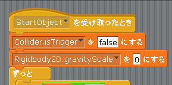

Scratch is developed by the Lifelong Kindergarten Group at the MIT Media Lab. See http://scratch.mit.edu
壁や床、障害物をすり抜けさせる
今のままでは Ball は壁や障害物など他のオブジェクトをすり抜けないで手前で止まってしまいますので、すり抜け出来るようにします。
Unity2Dのゲームオブジェクト間で当たり判定を制御するために「Collider」コンポーネントをアタッチするのですが、「Collider」コンポーネントには「isTrigger」というプロパティがあります。
この Collider コンポーネントの isTrigger プロパティは true か false の値を取り、通常は「インスペクタ」を使ってセットします。もし true の場合はそのオブジェクトは「トリガー」となって他のオブジェクトと衝突判定を行わなくなります(つまり他のオブジェクトをすり抜ける)。
ただし前も書いた通り今回の Scratch2Unity にはインスペクタがありませんので、代わりに図1の様に Ball のスクリプトが開始した直後に Collider の isTrigger に値をセットしています。
なおデフォルトでは isTrigger は false にしていますので Ball は他のオブジェクトをすり抜けません。
図1: インスペクタ(もどき)でトリガー指定 (デフォルト値 = false )
